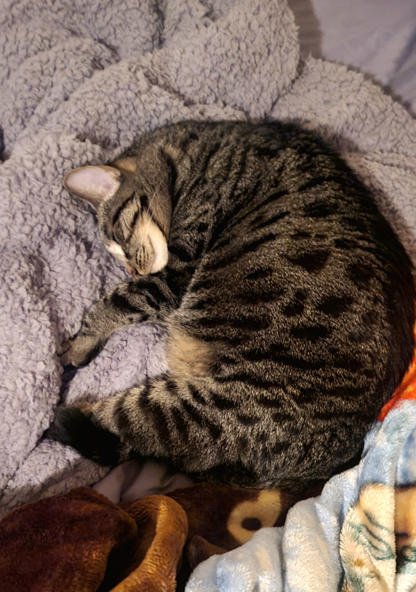
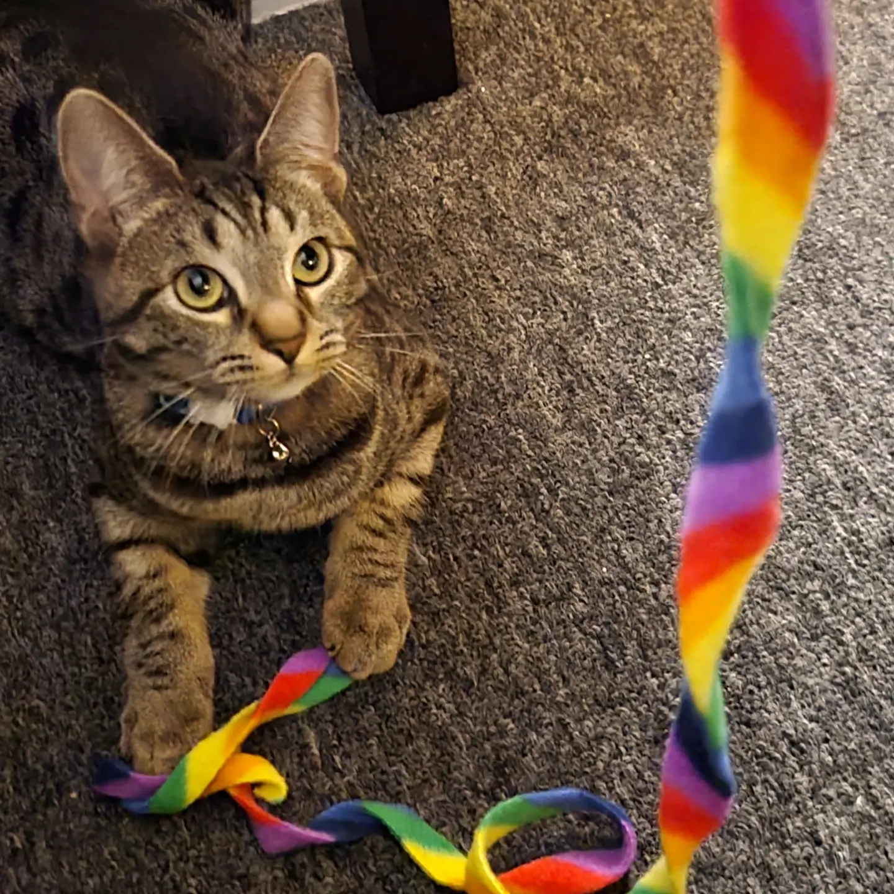
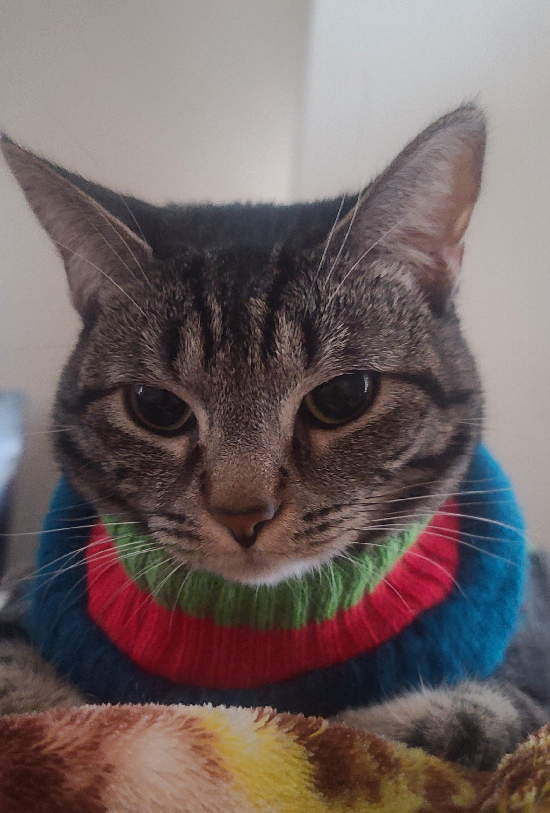
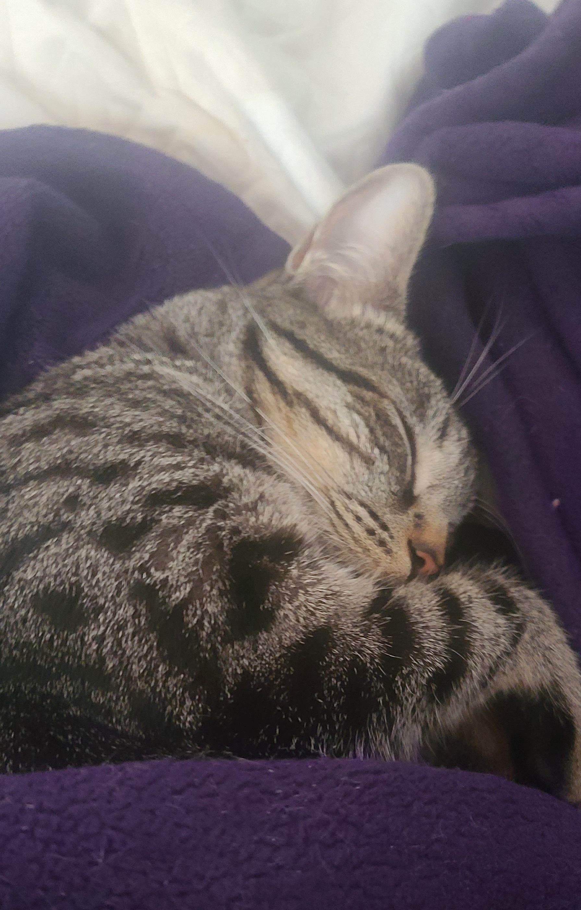

Learn More About Ellie the Cat
Ellie's Life
Ellie was born approximately in April of 2021. She was taken to Berkeley
Humane, a nonprofit animal
shelter located in Berkeley, CA, along with her family. It was here that she was left the last to be
adopted due to catching a respiratory infection and other potential adopters being too afraid to adopt
her. That did not stop her though! She was adopted by her owner on June 26, 2021 and taken to her new
home in Berkeley. It was there that she grew healthy and quickly became the rambunctious, joyful kitten
she was meant to be. She grew up fast, but always stayed a small cat relative to others. Still, she had
a wild energy that was unmatched. She learned how to play fetch and go on walks with her harness; people
wondered if she was actually a dog in disguise.
In 2022, her owner graduated college and moved to Sacramento, so Ellie had her first major
challenge. She had never left her small apartment home before, besides in her small walks. It was scary
for her at first, but she quickly transitioned to the new home and loves it even more than the previous.
Now she has more space to run and can even run up and down stairs!
Coming now upon her second
birthday, she is a full-grown (yet still so small) cat and has a bright future of cat naps and mice toys
ahead of her. She looks forward to each and every day, especially waking her owner up at 6am to be fed.
Ellie's Personality
Ellie has an energetic and playful personality. She always wants to play, except when it's bedtime. If you throw any of her toys, she will flay fetch with you for hours. She's very cuddly and affectionate - on her terms, of course. Some days she will want to be pet and her belly rubbed for a long time, other times, not so much but she'll allow it. As most cats do, she hates water, but she is still curious about it. She is curious about most things actually, and will often watch people as they are cooking, cleaning, watching tv, etc. She loves when her owner plays music, so for that reason, music from the HTML textbook has been added to this site to play.
Ellie's Favorite Video
Her favorite video is this cat video of mice running around and squeaking from YouTube. She loves to watch it and chase around the mice while pretending to catch them. You can find this video at the following link: VIDEO FOR CATS If you have cats at home, play this video for them and see if they get as excited as Ellie does.
A Bunch of Photos of Ellie Doing Cat Things
Here's Ellie on her adventures and in her daily life!




